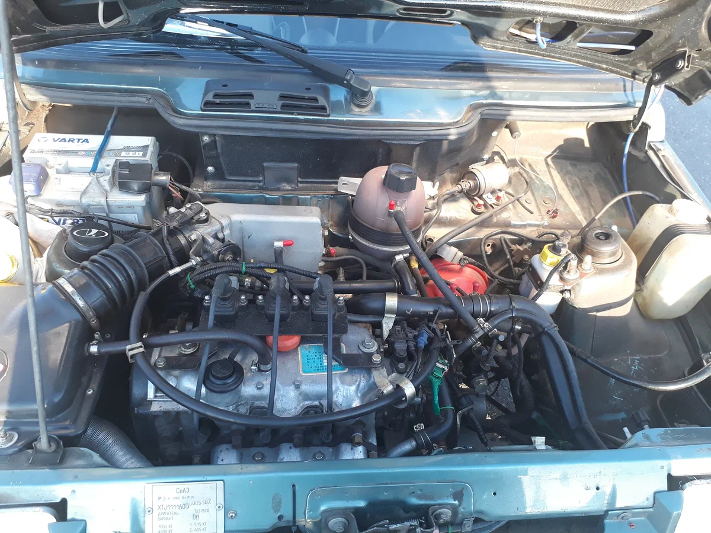

«Ока» (также известна под кодовыми обозначениями ВАЗ/СеАЗ/КамАЗ-1111 и Астро 11301) — советский, а затем российский легковой автомобиль I группы особо малого класса. «Ока» была разработана на Волжском автомобильном заводе и выпускалась на нём, а также на ЗМА и СеАЗе с 1987 по 2008 год. Всего было выпущено около 700 тысяч автомобилей.
Предыстория
Самостоятельная деятельность конструкторского коллектива Волжского автомобильного завода началась с разработки переднеприводного микролитражного автомобиля ВАЗ-Э1101, первый ходовой образец которого, за несуразную внешность получивший у заводчан название «Чебурашка», был построен в декабре 1971 года. Впоследствии были построены и испытаны ещё две серии прототипов (2Э1101 и 3Э1101 «Ладога»). По габаритам автомобиль примерно соответствовал будущей «Оке» (колёсная база 2000 мм, длина ок. 3200 мм), но снабжался более мощным двигателем (0,9 л., 50…55 л. с.). Сами заводчане оценивали данную разработку весьма самокритично, отмечая чрезвычайно «сырую» конструкцию и большое количество всплывших в ходе её отработки конструктивных и производственных дефектов.
Один из вариантов СМЗ-1101 «Ока», 1982 год.
К 1982 году проект, к которому подключился также конструкторский коллектив СМЗ, вылился в создание достаточно примитивного, в соответствии со скромными производственными возможностями Серпуховского завода, но по сравнению с серийной мотоколяской уже вполне полноценного микроавтомобиля, получившего обозначение СМЗ-1101. Однако перспективы развёртывания его выпуска в Серпухове всё ещё выглядели достаточно туманно, как ввиду низкой степени отработанности самого автомобиля, так и отсутствия у завода необходимых для этого производственных мощностей.
Первые автомобили были выпущены в декабре 1987 года. В 1988 году были изготовлены первые опытно-промышленные партии. В Тольятти изготовили 300 автомобилей. Производство велось не на основном конвейере ВАЗа, а в отдельно стоящем 62-м заводском корпусе. Параллельно опытная сборка началась и на КамАЗе, причём машины собранные в ТАССР первоначально носили название «Кама».
История производства
Массовое производство автомобилей ВАЗ-1111 «Кама» (почти копии выпускавшейся «Оки») предполагалось в городе Елабуга на Елабужском заводе легковых автомобилей (ЕлАЗ), в который в 1988 году был в рамках идеологической кампании по «конверсии» военно-промышленного комплекса и увеличению выпуска товаров народного потребления перепрофилирован несостоявшийся Камский тракторно-технический завод под предлогом снизившейся народно-хозяйственной и военно-стратегической необходимости в тракторах и танках. Равный по масштабу АвтоВАЗу, ЕлАЗ должен был производить 900 тысяч в год автомобилей ВАЗ-1111, его работники и их семьи должны были резко увеличить население Елабуги до 300—400 тысяч человек, а от новых жилых кварталов Елабуги до промплощадки завода и до Набережных Челнов должен был быть пущен скоростной трамвай. Ввиду ликвидации плановой социалистической экономики и затем распада СССР, ЕлАЗ позже реализовался не в задуманном виде, а в качестве малосерийного лицензионного производства иностранных автомобилей, выпуск ВАЗ-1111 же был налажен в меньших масштабах на других автозаводах.
В декабре 1994 года «Ока» начала выпускаться Заводом карданных валов (Гродно, Белоруссия).
В 1994 году «КАМАЗ» и «АвтоВАЗ» создали акционерное общество по производству автомобиля «Ока» в городе Набережные Челны.
В феврале 1995 года была снята с производства на АвтоВАЗе.
21 августа 1997 года с главного сборочного конвейера завода микролитражных автомобилей (ЗМА, Набережные Челны) сошёл 50 000 автомобиль «Ока».
В июне 2006 года была снята с производства на ЗМА, в связи со сменой собственника, и переходом завода на сборку иномарок.
В ноябре 2008 года СеАЗ остановил выпуск «Оки» в связи с её нерентабельностью. До конца года были распроданы остатки товарных автомобилей, а с марта 2009 года СеАЗ находится в состоянии консервации и распродал лишнее оборудование, но при этом поддерживает ряд жизненно важных цехов, например, гальваники, в рабочем состоянии. В 2013 году АвтоВАЗ заявлял о намерении возродить «Оку», но дальше заявлений дело не пошло. К этой идее вернулись десять лет спустя, но с инициативой выступил уже Минпромторг. В июне 2023 года глава ведомства Денис Мантуров заявил в интервью, что министерство готово «оперативно рассмотреть» предложение о возрождении марки, как только поступит предложение от производителей.
Модификации «Оки»
- ВАЗ-1111 — базовая модель с 2-цилиндровым карбюраторным двигателем ВАЗ-1111 объёмом 0,65 литра. Выпускалась в 1988—1996 гг. на ВАЗе и СеАЗе(«Ока»), КамАЗе («Кама»);
- ВАЗ-1111Э — экспериментальная модель с электроприводом.
- СеАЗ-1111-01 — социальная версия на базе ВАЗ-1111 для инвалидов без обеих ног;
- СеАЗ-1111-02 — социальная версия на базе ВАЗ-1111 для инвалидов без одной ноги;
- СеАЗ-1111-03 — социальная версия на базе ВАЗ-1111 для инвалидов без одной ноги и одной руки;
- ВАЗ-11113 (LADA OKA) — модификация с 2-цилиндровым карбюраторным двигателем ВАЗ-11113 объёмом 0,75 литра. Выпускалась в 1996—2007 гг. В 2000 году на «Автоэкзотика-2000» демонстрировалась версия с 2-дверным кузовом седан с отдельным выступающим багажником объёмом 200 л;
- СеАЗ-11113-01 — социальная версия на базе ВАЗ-11113 для инвалидов без обеих ног. В 2000 году на базе данной модификации был показан опытный образец «Ока Престиж» с мягким тентом в левой части крыши и поворотным водительским креслом;
- СеАЗ-11113-02 — социальная версия на базе ВАЗ-11113 для инвалидов без одной ноги;
- СеАЗ-11113-03 — социальная версия на базе ВАЗ-11113 для инвалидов без одной ноги и одной руки;
- СеАЗ-11116 — модификация с китайским 3-цилиндровым инжекторным двигателем TJ FAW объёмом 1,0 литр, выпускавшаяся в 2007—2008 гг. СеАЗом;
- СеАЗ-11116-01 — социальная версия на базе СеАЗ-11116 для инвалидов без обеих ног;
- СеАЗ-11116-02 — социальная версия на базе СеАЗ-11116 для инвалидов без одной ноги;
- СеАЗ «Ока Юниор» — мелкосерийная спортивная версия «Оки» для начинающих автогонщиков. Оснащалась защитными дугами, спортивным рулём и сиденьями с четырёхточечными ремнями безопасности;
- СеАЗ «Спорт» — псевдогоночная версия «Оки» с дугами безопасности, сиденьями Sparco с четырёхточечным ремнём безопасности, креплением капота типа «спорт» и отключением «массы» из салона;
- «Ока-Астро-11301» — мелкосерийная версия «Оки» выпускавшаяся в 2002—2006 гг. челнинской малой фирмой «Астро-кар» (позднее «Камский автосборочный завод») и оснащавшаяся дефорсированым до АИ-80 украинским карбюраторным двигателем МеМЗ-245.1 объёмом 1,1 литра уровня Евро-0 и мощностью 49 л. с. Отличалась удлинённой колёсной базой (версия 11301) и расширенной колеёй передних колёс. Запасное колесо было перенесено в багажник. Данная конструкция оказалось слишком «сырой» из-за применения ряда «кустарных» деталей;
- «Астро-113011» — тюнинговая версия «Оки» выпускавшаяся в 2006—2007 гг. в Набережных Челнах по индивидуальным заказам малой фирмой «Камский автосборочный завод» на базе серпуховских кузовов и оснащавшаяся украинским инжекторным двигателем Мелитопольского моторного завода объёмом 1,1 литра уровня Евро-2. Отличалась только расширенной колеёй передних колёс;
- ЗМА-17013 «Тойма» — мелкосерийная коммерческая модель на базе камской «Оки». Оснащалась кузовом типа фургон с увеличенным задним свесом и пластиковой надстройкой увеличивавшей полезный объём грузового отсека до 1,5 м³. Грузоподъёмность — до 250 кг (без пассажира). «Тойма» выпускалась челнинской малой фирмой «Астро-кар» (позднее «Камский автосборочный завод») малыми партиями в 2000—2007 гг. Кроме базовой развозной модели «Тойма» существовали следующие специализированные версии: «милиция», «скорая помощь» и «социальная», с остеклённой надстройкой и различной планировкой салонов, однако, за пределы опытно-серийных образцов они не вышли;
- ЗМА-1901 «Гном» — опытный образец пикапа на базе камской «Оки». Конструкция шасси полурамная. Грузоподъёмность — до 300 кг (без пассажира). Серийно не производилась;
- СеАЗ-11116-010-50 «Ока Фургон» и СеАЗ-11116-011-50 «Ока Пикап» — коммерческие модификации «Оки» на базе СеАЗ-11116 с кузовам типа фургон (с пластиковой надстройкой) и пикап (без надстройки). В 2007 году на СеАЗе была произведена единственная опытно-промышленная партия из 50 таких автомобилей.
- СеАЗ-11116-010-52 «Ока Универсал» — коммерческая модификация «Оки» с кузовом типа фургонет (кузов хетчбэк с неостеклёнными боковинами и грузовым отсеком вместо задней части пассажирского салона). В 2007 году было произведено несколько опытных образцов.
- СеАЗ-11116-60 «Ока Пикап с повышенной грузоподъёмностью» — коммерческая модификация «Оки» с кузовом типа пикап с отдельной бортовой платформой. В 2007 году было произведено несколько опытных образцов. Грузоподъёмность — 400 кг.
- ТТМ-1901 «Беркут» — тяжелый снегоход (автосани) классической лыжно-гусеничной схемы для транспортировки личного состава и буксировки лыжников по пересеченной местности и снежной целине. Производится под заказ нижегородской фирмой «Транспорт» с использованием элементов кузова и светотехники «Оки». Пассажировместимость 2 чел, гр. 200 кг, п. м. 900 кг, уд. давление на поверхность 0,06 кг/см²; двигатель ВАЗ-21213 (80 л. с.), КПП 5-ст. мех., максимальная скорость 80 км/ч.
Технические характеристики
- Ёмкость АКБ — 30—44 А·ч;
- Мощность генератора — 800 Вт;
- Радиус разворота — 4,6 м;
- Подвеска спереди/сзади — Мак-Ферсон/упругая поперечная балка;
- Тормоза спереди/сзади — дисковые вентилируемые/барабанные;
- Шины — 135/80 R12;
- Объём масляного картера — 2,5 л.
Внешность:
Ранний и поздний салон:
Двигатели: самый распространённый половинка двигателя ВАЗ-2108, двигатель МеМЗ, двигатель FAW
